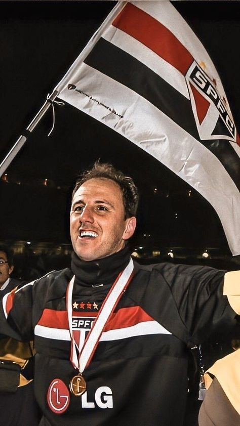
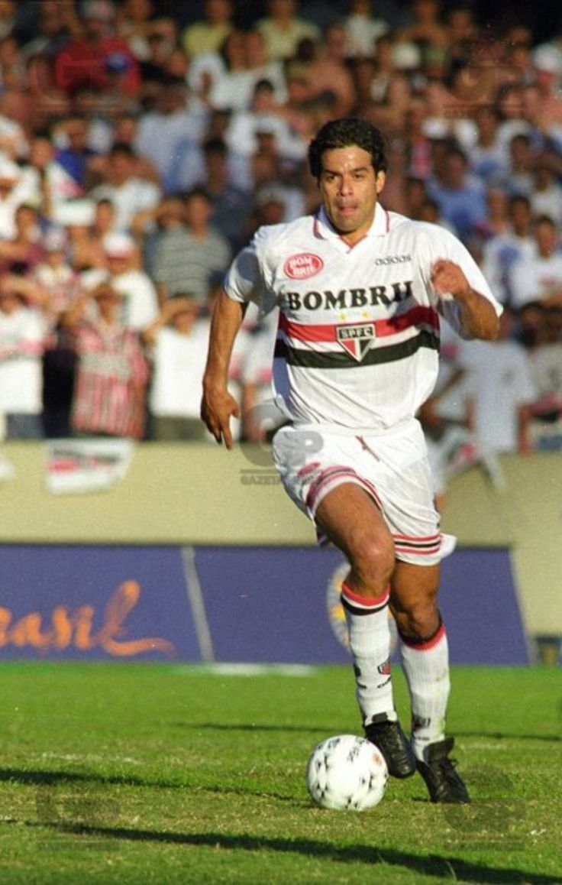
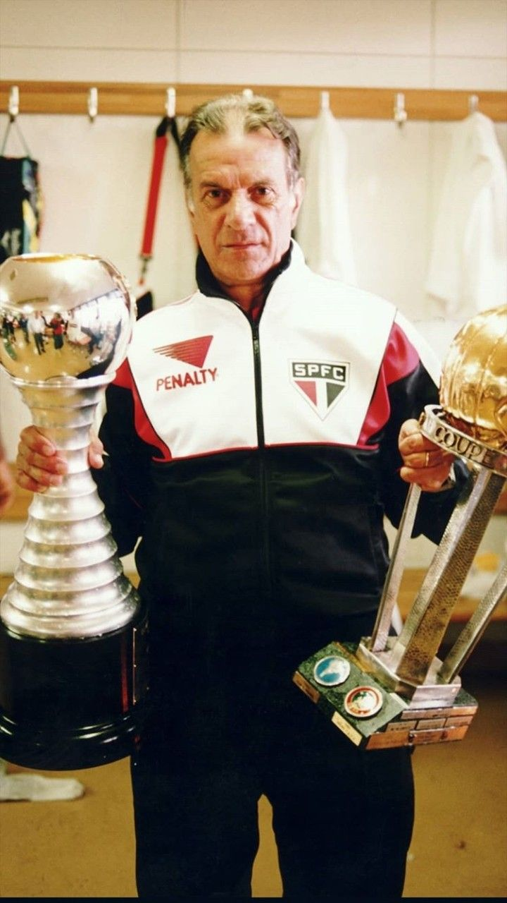
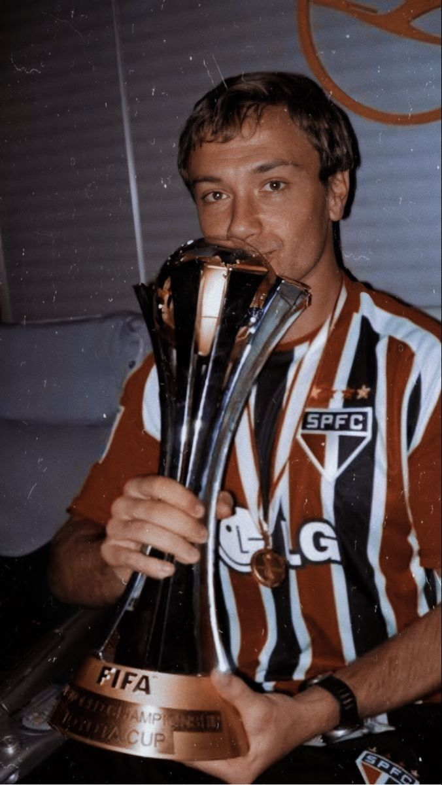

Rogério Ceni: O Maior Goleiro Artilheiro da História
Rogério Ceni é uma lenda não apenas do São Paulo, mas do futebol mundial. Nascido em Pato Branco, no Paraná, Ceni chegou ao São Paulo em 1990 e rapidamente se tornou um símbolo do clube. Além de sua habilidade excepcional como goleiro, ele ficou famoso por sua capacidade de marcar gols, especialmente de faltas e pênaltis. Com 131 gols em sua carreira, ele é o goleiro com mais gols na história do futebol. Ceni foi fundamental nas conquistas do Mundial de Clubes da FIFA em 2005, da Libertadores da América em 2005 e de vários títulos nacionais. Sua liderança dentro e fora de campo, aliada à sua dedicação ao clube, fez dele um ídolo eterno para a torcida tricolor. Ele é o jogador que mais vezes vestiu a camisa do São Paulo, com mais de 1200 jogos, e seu legado transcende o futebol, representando disciplina, profissionalismo e amor à camisa
Raí: O Capitão da Era de Ouro
Raí, irmão do também lendário Sócrates, é outro nome que brilhou no São Paulo FC. Meia-campista de classe e visão de jogo privilegiada, Raí foi o capitão do time que conquistou o mundo no início dos anos 1990. Ele foi peça fundamental nas vitórias da Copa Libertadores de 1992 e 1993 e dos Mundiais de Clubes da FIFA nos mesmos anos. Raí era conhecido por sua habilidade de ditar o ritmo do jogo, sua precisão em passes e sua capacidade de marcar gols importantes. Além disso, sua liderança e carisma o tornaram um símbolo daquela geração vitoriosa. Após sua passagem pelo futebol europeu, onde jogou pelo Paris Saint-Germain, Raí retornou ao São Paulo para encerrar sua carreira com chave de ouro, consolidando-se como um dos maiores ídolos da história do clube.
Telê Santana: O Mestre que Transformou o São Paulo
Telê Santana foi o arquiteto da era de ouro do São Paulo FC. Técnico visionário e apaixonado pelo futebol ofensivo, Telê assumiu o comando do time em 1990 e revolucionou o clube com seu estilo de jogo baseado em posse de bola, passes precisos e ataques envolventes. Sob seu comando, o São Paulo conquistou dois títulos da Libertadores (1992 e 1993) e dois Mundiais de Clubes da FIFA (1992 e 1993), além de outros títulos importantes. Telê era mais do que um técnico; era um líder que inspirava seus jogadores e encantava os torcedores. Sua filosofia de jogo e sua personalidade marcante deixaram um legado que influencia o futebol brasileiro até hoje. Ele é lembrado não apenas pelas conquistas, mas por ter devolvido ao São Paulo o status de grande potência do futebol.
O Guerreiro Uruguai do São Paulo FC
Lugano é lembrado como um dos maiores zagueiros da história do São Paulo FC. Sua garra, liderança e gols decisivos o tornaram um ídolo eterno para a torcida tricolor. Ele representa o espírito de luta e determinação que sempre caracterizou os grandes ídolos do clube. Sua passagem pelo São Paulo foi marcada por conquistas históricas e momentos inesquecíveis, e seu nome está gravado na memória dos são-paulinos como um verdadeiro guerreiro. Tricolor, orgulho de